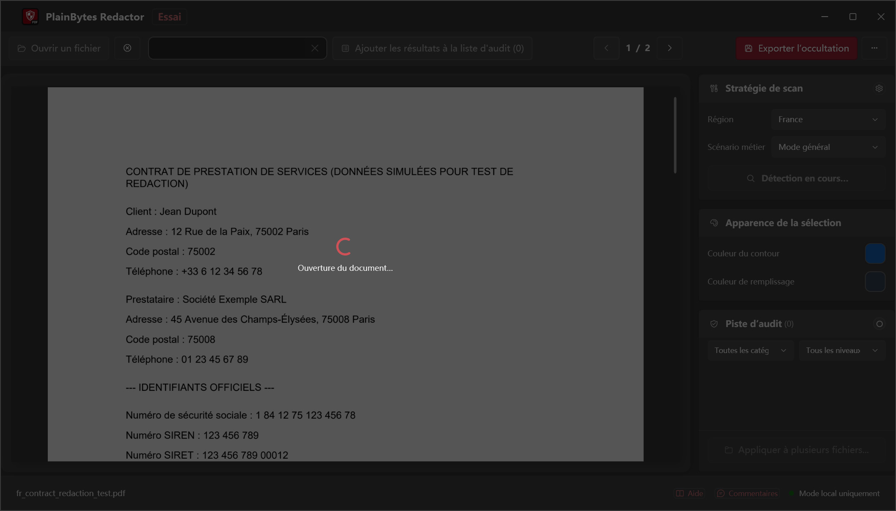
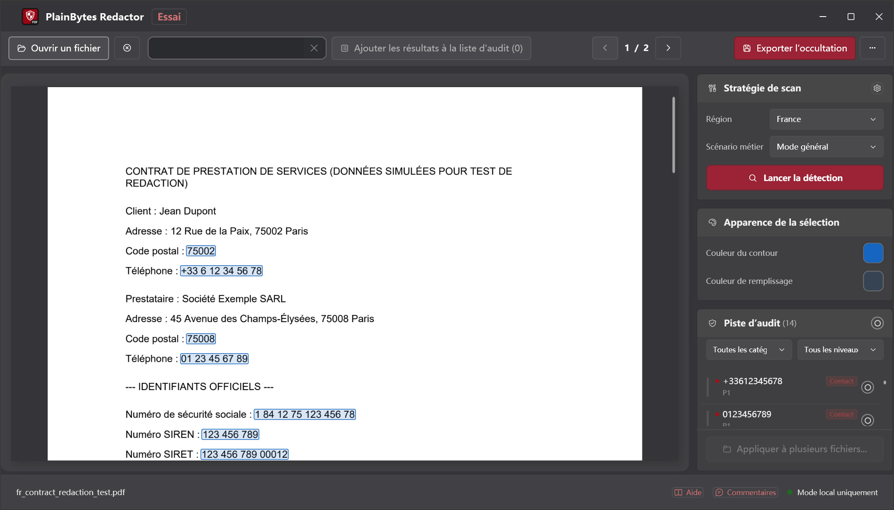
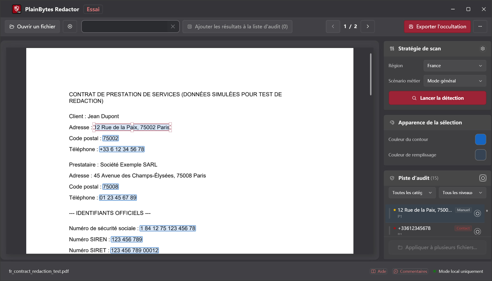
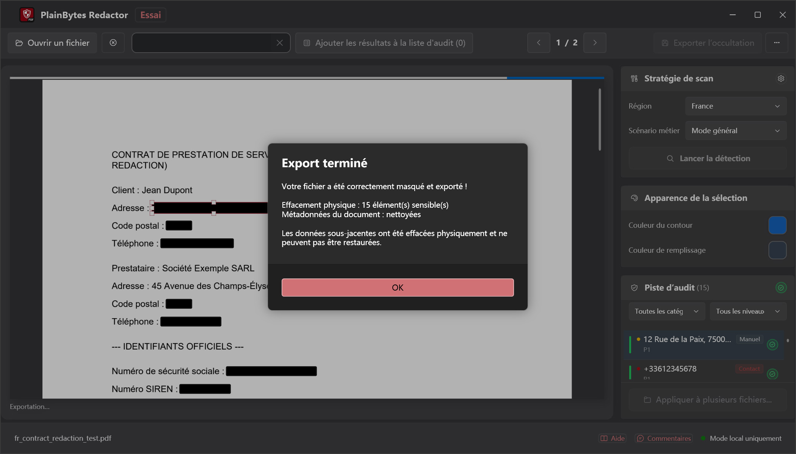

01
Ouvrir et analyser
Chargez un PDF et lancez la détection pour les formats de votre région.
PlainBytes Redactor
PlainBytes Redactor s'exécute entièrement sur votre ordinateur — pas d'envoi cloud, aucun service IA ne voit vos fichiers. Détection automatique pour les formats d'identifiants de 28 pays, plus revue manuelle avant export.
Essai gratuit 10 jours · Achat unique · Sans abonnement
Fonctionnement

Chargez un PDF et lancez la détection pour les formats de votre région.

Consultez chaque élément signalé avec sa catégorie de risque.

Ajoutez, supprimez ou affinez avant de finaliser.

Contenu et métadonnées supprimés définitivement.
La plupart des outils de rédaction — surtout ceux basés sur l'IA — envoient vos documents sur un serveur avant de trouver et supprimer les informations sensibles. Pour quiconque est tenu par la confidentialité, le secret professionnel ou l'indépendance d'audit, c'est un risque inutile pour rédiger un fichier.
PlainBytes Redactor effectue toute la détection et le traitement sur votre appareil. Vos fichiers ne quittent jamais votre ordinateur — pas de compte, pas de sync, pas de serveur.
Conformité
Architecture local-first alignée sur les grands cadres de protection des données — aucun transfert vers des tiers pendant le traitement.
Aide à satisfaire les exigences de l'article 17 (droit à l'effacement). Les données personnelles sont supprimées définitivement du flux de contenu PDF — aucun transfert vers des tiers pendant le traitement.
Droit à l'effacementConforme à l'esprit de la loi française sur la protection des données, supervisée par la CNIL. Le traitement entièrement local garantit qu'aucune donnée personnelle n'est transmise à des services externes non autorisés.
Conformité CNILLa protection des données est intégrée dès la conception du produit. Traitement local, suppression physique des données et absence de dépendance au cloud correspondent au principe de « protection des données dès la conception » prévu à l'article 25 du RGPD.
Protection dès la conceptionRemarque : PlainBytes Redactor est un outil conçu pour faciliter les flux de travail conformes à la protection des données. Il ne constitue pas un conseil juridique et n'a pas fait l'objet d'une certification formelle par un tiers.
Pour les avocats
Rédigez SSN, données financières et autres PII avant e-filing ou partage discovery, sans passer par un cloud tiers.
Pour les comptables
Rédigez numéros de compte, SSN et détails financiers clients avant de partager papiers de travail d'audit, déclarations fiscales ou rapports de fin d'année — sans passer par un cloud tiers.
Pour les équipes RH
Rédigez salaires, SSN et données personnelles avant de partager lettres d'offre, dossiers de licenciement ou fichiers du personnel avec auditeurs, conseils juridiques ou en réponse à des demandes de données.